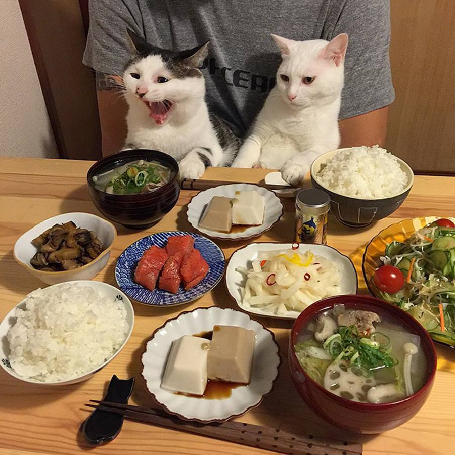

Ох, уж это правильное питание. Сейчас оно актуально не только для современного человека, но и для кошки.
Конечно, можно пойти в магазин и купить всю еду от мяса в пакетиках до сухого корма и консервированного рагу.
Это удобно, но дорого. Стоимость рациона любимого питомца выльется не в одну тысячу рублей.
Поэтому лучше, дешевле и удобнее готовить еду самостоятельно.

Молоко.
Нальем кошечке молочка и испортим пищеварение. Именно его не рекомендуют давать взрослому животному.
Допускается присутствие в рационе у котят до возраста трех месяцев. Далее этот продукт нужно исключить.
Особенности других продуктов:
Рыба дается кошке только после термической обработки, рекомендуется использовать морские виды и не чаще одного раза в неделю.
Важно использовать филе без косточек, которые наносят микротравмы внутренним органам. Злаки нельзя исключать, это важный элемент рациона. Желательно отдавать предпочтение рису, пшенице, овсу.
Не стоит использовать в блюдах пшено и гречку. В природе кошки хищники, но овощи им также необходимы.
Желательно отдавать предпочтение тыкве, моркови, брокколи и цветной капусте, свекле. Не стоит использовать в рационе картофель, белокочанную капусту.
На минуточку: чем не стоит кормить кошку
Практическая работа №3
Костинова Мария Анатольевна
44-23-167
хобби: рисование танцы
Список друзей
Задача: Есть ли блюда для котов?
хобби: рисование танцы
Список друзей
| № | Лучший друг | emale |
|---|---|---|
| 1. | Галичева Ирина | galichevairi@gmail.com |
| 2. | Мария Бондаренко | bond.m@gmail.com |
| 3. | Балыбердина Елизавета | tortik_lisa@gmail.com |
| 3. | Максим Каммерер | mak.sim@gmail.com |

Задача: Есть ли блюда для котов?